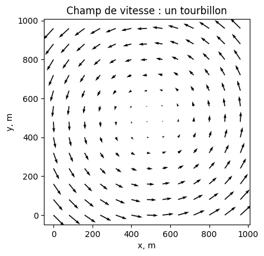
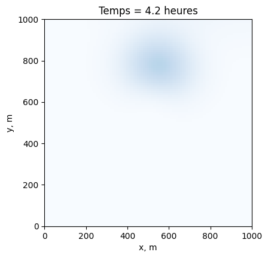

Tutoriel 9#
Champs de vitesse 2D et matrices de booléens#
Jusqu’ici, le courant était uniforme : une seule valeur Vx, et un seul test if Vx > 0 suffisait à choisir le bon décentrage. Dans un lac ou dans l’océan, le courant est différent en chaque point : il peut aller vers la droite ici et vers la gauche trois cellules plus loin. On ne peut donc plus faire un test, mais le bon choix en chaque point de la grille, simultanément.
1. Où vivent les vitesses ?#
Vx multiplie \(\frac{\partial C}{\partial x}\), qui se discrétise (C[:,1:] - C[:,:-1])/dx et vaut donc entre deux colonnes : Vx doit être de taille (ny, nx-1). De même Vy vit entre deux lignes, taille (ny-1, nx).
Vx vit ici Vy vit ici
o o o o | o | o o o o
- - -
o o o o | o | o o o o
(noeuds : ny,nx) (ny, nx-1) (ny-1, nx)
On obtient ces positions en moyennant deux colonnes voisines (pour Vx) ou deux lignes voisines (pour Vy). C’est ici que se produisent la plupart des erreurs de dimensions : inverser les deux donne un tableau de la mauvaise taille.
import numpy as np
import matplotlib.pyplot as plt
from IPython.display import clear_output, display
Lx = Ly = 1000.0 ; nx = ny = 101 ; Omega = 4e-4 # lac (m), grille, rotation (rad/s)
x = np.linspace(0,Lx,nx) ; y = np.linspace(0,Ly,ny)
dx = Lx/(nx-1) ; dy = Ly/(ny-1)
X, Y = np.meshgrid(x, y)
# un tourbillon : Vx = -Omega*(y-yc), Vy = +Omega*(x-xc), aux INTERFACES
Vx = -Omega*( 0.5*(Y[:,1:]+Y[:,:-1]) - Ly/2 ) # moyenne selon les COLONNES
Vy = Omega*( 0.5*(X[1:,:]+X[:-1,:]) - Lx/2 ) # moyenne selon les LIGNES
print("Vx :", Vx.shape, " il faut (ny, nx-1) =", (ny,nx-1))
print("Vy :", Vy.shape, " il faut (ny-1, nx) =", (ny-1,nx))
plt.figure(figsize=(4.5,4.5))
s = 8
plt.quiver(X[::s,::s], Y[::s,::s], -Omega*(Y-Ly/2)[::s,::s], Omega*(X-Lx/2)[::s,::s])
plt.xlabel('x, m') ; plt.ylabel('y, m') ; plt.title('Champ de vitesse : un tourbillon')
plt.gca().set_aspect('equal') ; plt.show()
Vx : (101, 100) il faut (ny, nx-1) = (101, 100)
Vy : (100, 101) il faut (ny-1, nx) = (100, 101)

2. Les matrices de booléens#
Comment appliquer C[:,1:] += ... là où la vitesse est positive et C[:,:-1] += ... là où elle est négative, alors que les deux cas coexistent dans la même matrice ?
On écrit la comparaison sur toute la matrice d’un coup. Vx > 0 ne renvoie pas True ou False, mais une matrice de la même taille que Vx, remplie de True et de False — que Python interprète comme des 1 et des 0 :
Vx Vx>0 Vx<0
2 3 2 3 4 5 1 1 1 1 1 1 0 0 0 0 0 0
0 1 0 1 2 3 0 1 0 1 1 1 0 0 0 0 0 0
-1 0 -1 0 1 2 0 0 0 0 1 1 1 0 1 0 0 0
-3 -2 -1 -2 -1 0 0 0 0 0 0 0 1 1 1 1 1 0
En multipliant la mise à jour par ce masque, elle est annulée là où le masque vaut 0, et s’applique normalement là où il vaut 1.
⚠️ Piège de syntaxe. Écrivez
- Vx * (Vx < 0) * ...et non- (Vx < 0) * Vx * ...: le moins s’appliquerait au booléen, et Python s’arrête surTypeError: The numpy boolean negative ... is not supported.
3. L’advection 2D complète#
Quatre mises à jour : le décentrage vers la droite puis vers la gauche en \(x\), et la même chose en \(y\). Une tache de polluant est lâchée dans le lac, et le tourbillon l’emporte.
freq_affich = 20
dt = min( dx/(2.1*np.max(abs(Vx))), dy/(2.1*np.max(abs(Vy))) ) # dt_adv en 2D
nt = int(2*np.pi/Omega/dt) # un tour complet
C = 100*np.exp(-((X-Lx/2)**2 + (Y-0.8*Ly)**2)/7200) # la tache initiale
fig, ax = plt.subplots(figsize=(4.5,4.5))
for it in range(nt):
# advection en x : une mise a jour par sens de courant
C[:,:-1] += dt * ( - Vx*(Vx < 0)*( C[:,1:] - C[:,:-1] )/dx )
C[:,1:] += dt * ( - Vx*(Vx > 0)*( C[:,1:] - C[:,:-1] )/dx )
# advection en y : exactement la meme chose selon l'autre axe
C[:-1,:] += dt * ( - Vy*(Vy < 0)*( C[1:,:] - C[:-1,:] )/dy )
C[1:,:] += dt * ( - Vy*(Vy > 0)*( C[1:,:] - C[:-1,:] )/dy )
if it % freq_affich == 0:
clear_output(wait=True) ; ax.cla()
ax.imshow(C, origin='lower', extent=[0,Lx,0,Ly], cmap='Blues', vmin=0, vmax=100)
ax.set_xlabel('x, m') ; ax.set_ylabel('y, m')
ax.set_title('Temps = ' + str(round(it*dt/3600,1)) + ' heures')
display(fig) ; plt.pause(0.02)
plt.close()

La tache fait le tour du lac et revient à son point de départ. Avec le mauvais décentrage, le calcul aurait explosé avant le premier quart de tour.
À expérimenter#
Inversez le signe de
Omega. La tache tourne-t-elle bien dans l’autre sens ?Remplacez les quatre mises à jour par les deux seules lignes
C[:,1:] += ...etC[1:,:] += ..., sans les masques. Au bout de combien de temps le calcul explose-t-il ?